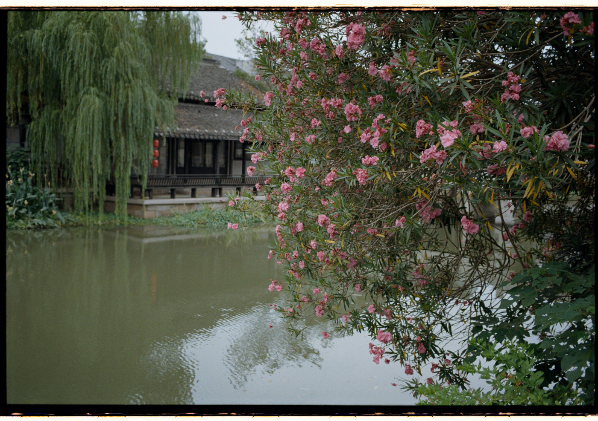
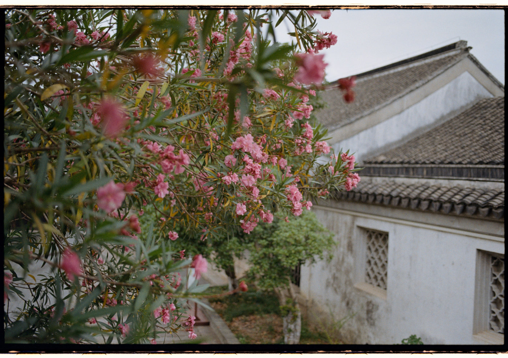
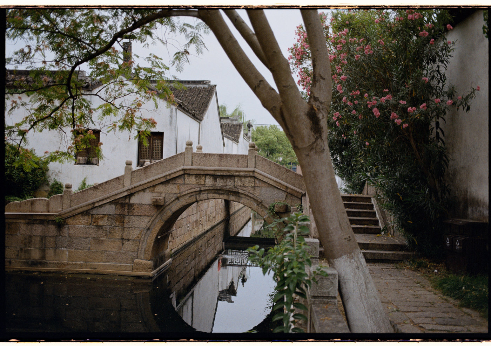
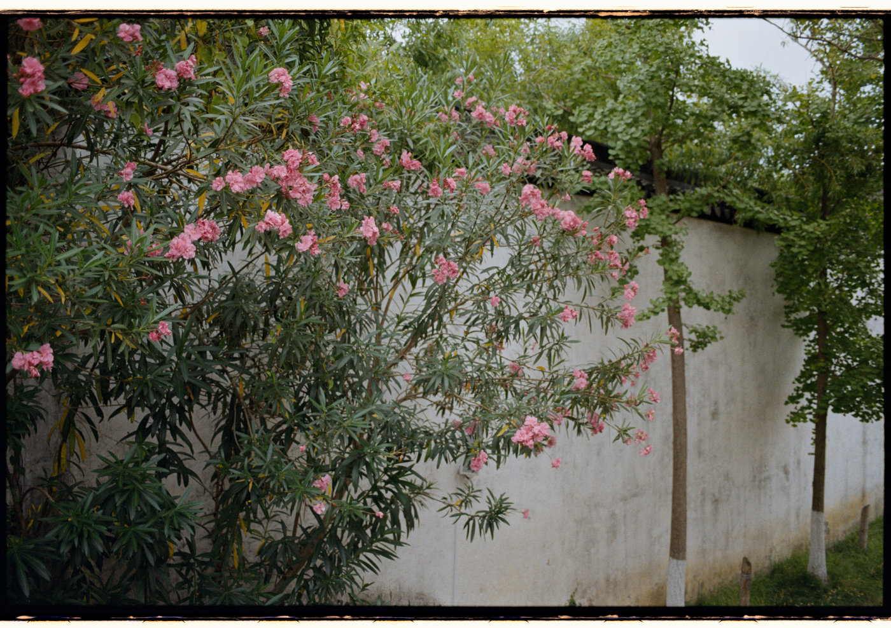
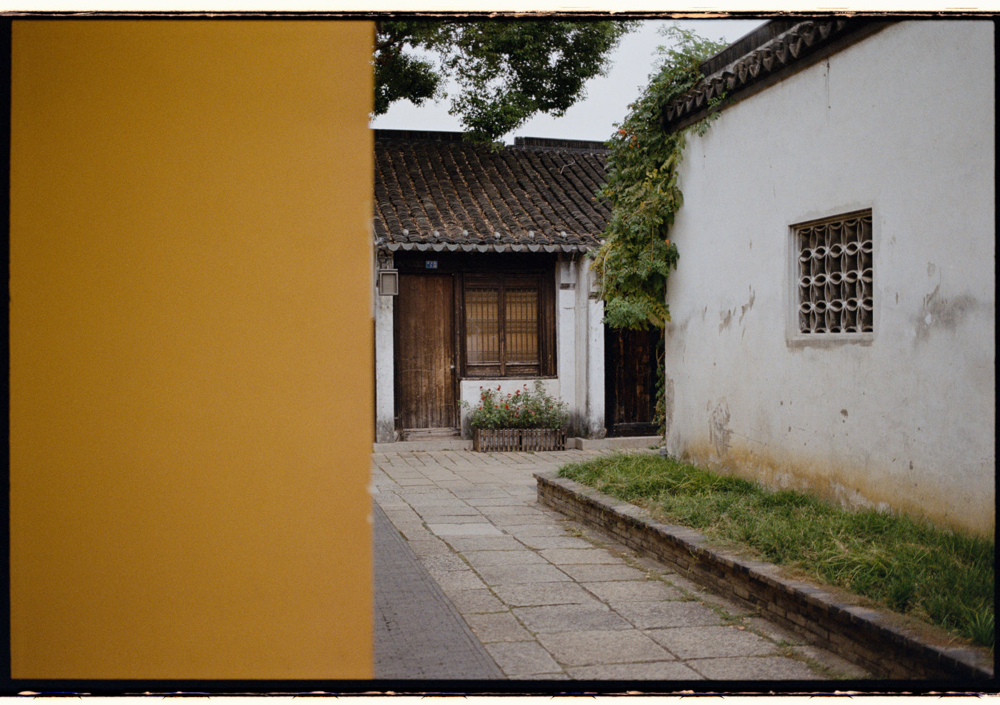
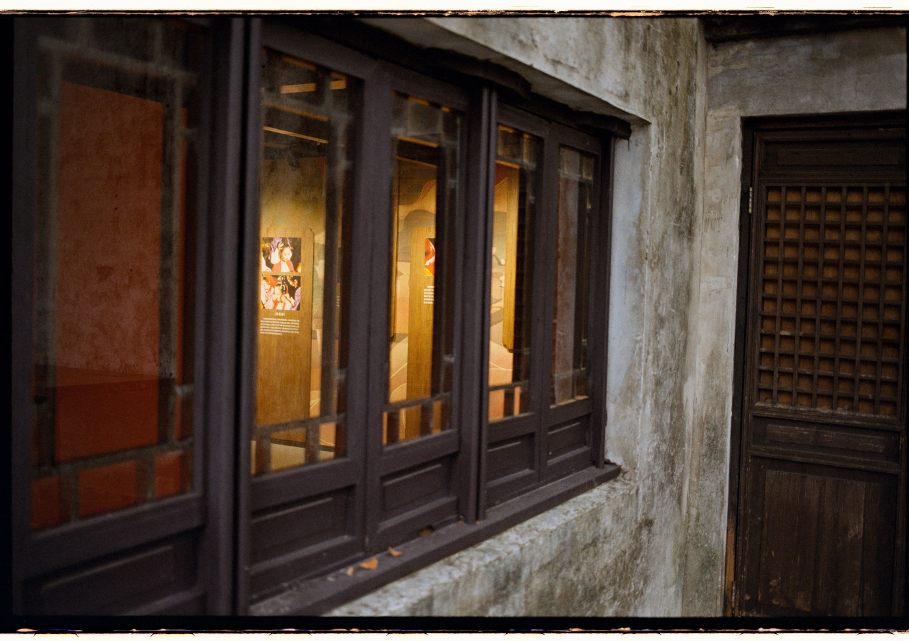
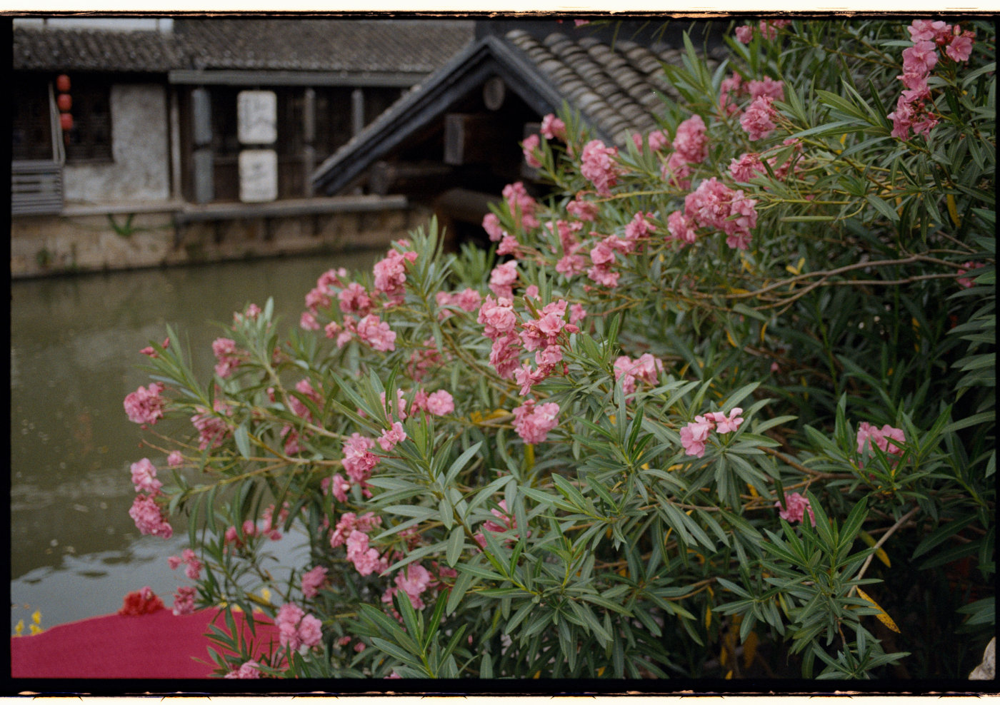
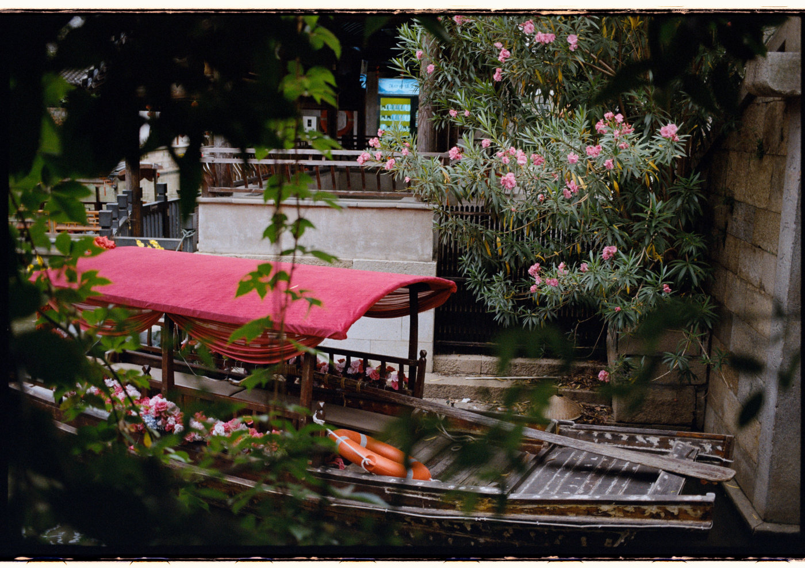
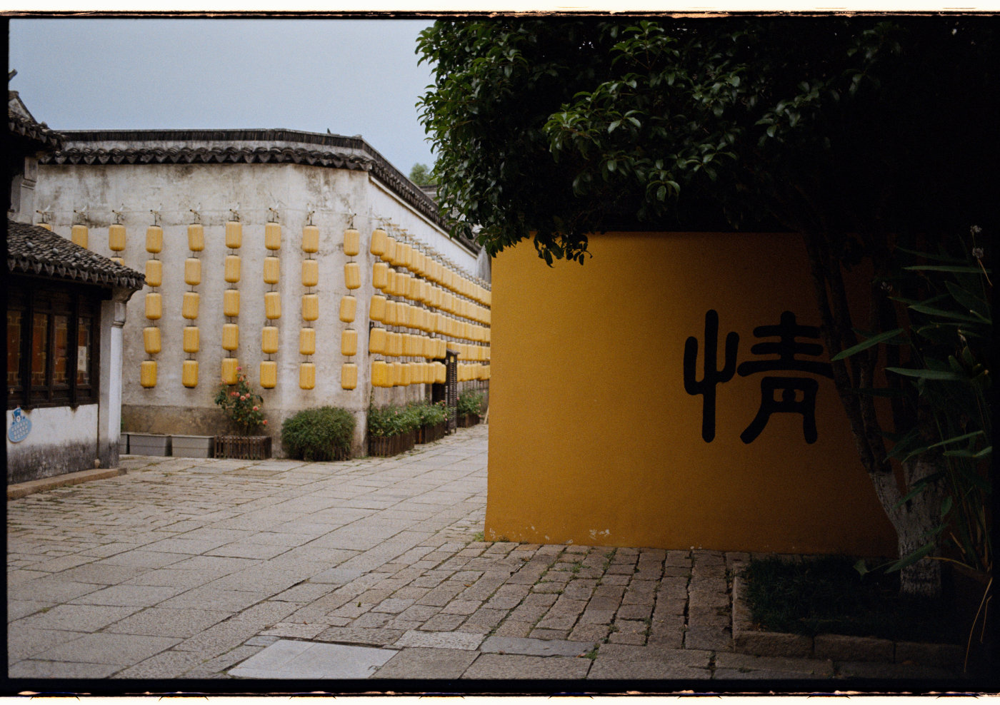
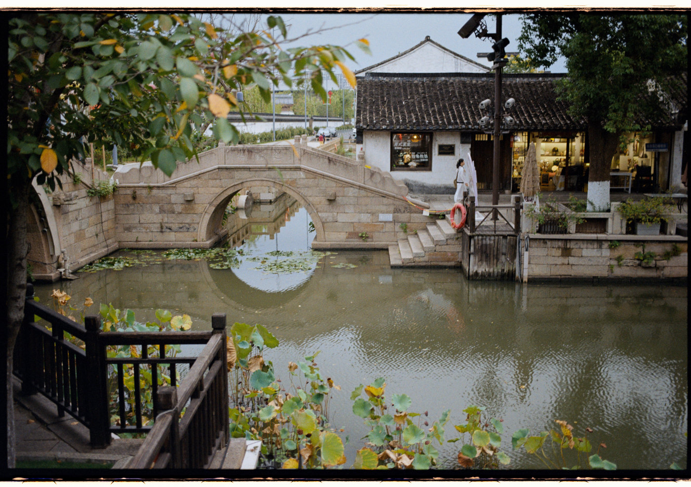

荡口古镇，旧称丁舍、丁村，位于无锡市锡山区鹅湖镇。这里原本并不是如今这样的旅游景区。十多年前，古镇经过修缮并开始商业化开发，渐渐成为热门的游览地。那时的荡口游人如织，热闹非凡。
最近，我常常途经荡口。听说古镇早已免费开放，便想着以后可以时常进来走走。
这次到访时，游客不多。我沿着河边慢慢走，难得地享受了一段清静时光。八月底正是夹竹桃盛开的季节，粉色花朵一路相伴，让这座古朴的小镇也显得鲜活起来。
ENGLISH
Dangkou Ancient Town, once known as Dingshe or Dingcun, is located in Ehu Town, Xishan District, Wuxi. It was not always the tourist destination it is today. More than a decade ago, the old town was renovated and developed commercially, gradually becoming a popular attraction. Back then, its lanes were often crowded with visitors.
Lately, I have found myself passing through Dangkou quite often. I heard that the ancient town had opened to the public free of charge, and thought it might become somewhere I could return to for a walk from time to time.
There were few visitors when I went. I wandered slowly along the waterways, enjoying a rare moment of quiet. Late August is when the oleanders are at their best. Their pink blossoms lined the way, bringing a little liveliness to the old town.









